Beyond the Notebook
Tim Renner
Talk Data to Me, 11/6/2018
About Me
Dual-class Data Scientist / Software Engineer at HomeAway
Alignment - lawful good.
What is Machine Learning?
kidding
What is Production?
A place where your code runs for a really long time without you watching it and costs real money when it breaks.
Production is Not
Java
Being an “enterprise” language does not automatically make it the best choice.
Notebook vs Production
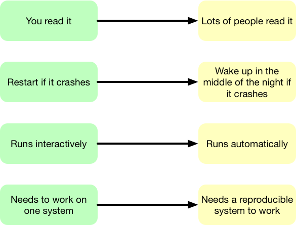
Notebook Code Sucks
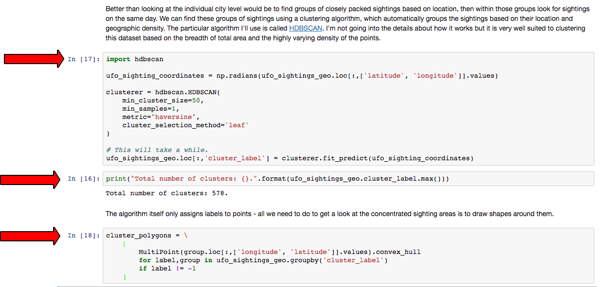
This is a valid notebook that I can version.
Notebook Code Sucks
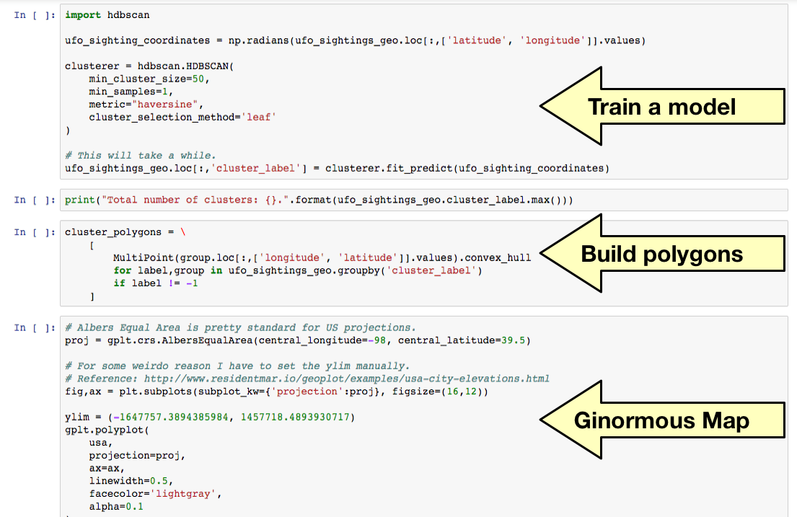
Three big steps, zero functions.
Notebook Code Sucks
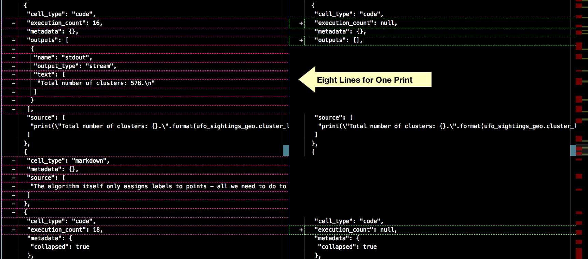
Notebook changes can be hard to track.
It’s Okay
Notebooks aren’t for writing code, notebooks are for exploring it.
They get their power by breaking from software conventions.
Notebook vs Production
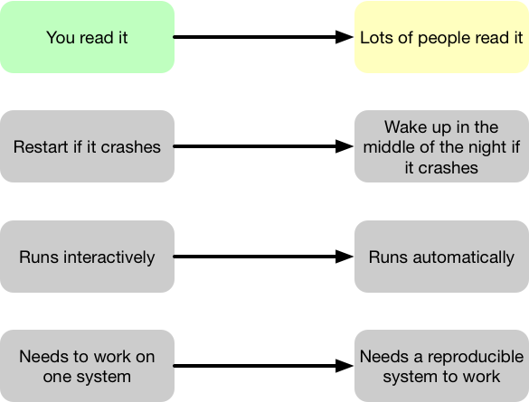
People Read Your Code
It’s probably a good idea to make it easy for them.
You’re not done when you deploy the first version, you’re just getting started.
Code Organization
dataset = pd.read_data(input_file)
X_train, X_test, y_train, y_test = train_test_split(
dataset[features],
dataset[target]
)
preprocessing_pipeline = make_preprocessing_pipeline()
if model == "dummy":
model = train_dummy_model(X_train, y_train, pipeline)
else:
model = train_model(X_train, y_train, pipeline)Code should tell the story of what the program does.
Code Organization
dataset = pd.read_data(input_file)
# X_train, X_test, y_train, y_test = train_test_split(
# dataset[features],
# dataset[target]
# )
# preprocessing_pipeline = make_preprocessing_pipeline()
# if model == "dummy":
# model = train_dummy_model(X_train, y_train, pipeline)
# else:
# model = train_model(X_train, y_train, pipeline)Read the dataset.
Code Organization
# dataset = pd.read_data(input_file)
X_train, X_test, y_train, y_test = train_test_split(
dataset[features],
dataset[target]
)
# preprocessing_pipeline = make_preprocessing_pipeline()
# if model == "dummy":
# model = train_dummy_model(X_train, y_train, pipeline)
# else:
# model = train_model(X_train, y_train, pipeline)Split into train / test sets.
Code Organization
# dataset = pd.read_data(input_file)
# X_train, X_test, y_train, y_test = train_test_split(
# dataset[features],
# dataset[target]
# )
preprocessing_pipeline = make_preprocessing_pipeline()
# if model == "dummy":
# model = train_dummy_model(X_train, y_train, pipeline)
# else:
# model = train_model(X_train, y_train, pipeline)Create the preprocessing pipeline.
Code Organization
# dataset = pd.read_data(input_file)
# X_train, X_test, y_train, y_test = train_test_split(
# dataset[features],
# dataset[target]
# )
# preprocessing_pipeline = make_preprocessing_pipeline()
if model == "dummy":
model = train_dummy_model(X_train, y_train, pipeline)
else:
model = train_model(X_train, y_train, pipeline)Train the model - either a dummy or the real one.
Code Organization
X_train, X_test, y_train, y_test = train_test_split(
dataset[features],
dataset[target]
)
preprocessing_pipeline = make_preprocessing_pipeline()
if model == "dummy":
model = train_dummy_model(X_train, y_train, pipeline)
else:
model = train_model(X_train, y_train, pipeline)
##### WHAT GOES HERE ? #####Organized code is predictable.
Code Formatting
Code with inconsistent formatting is not predictable, and difficult to read.
dataset = pd.read_data(input_file)
X_train, X_test, y_train, y_test = train_test_split(dataset[features],dataset[target])
preprocessing_pipeline = make_preprocessing_pipeline()
if model == "dummy": model = train_dummy_model(X_train, y_train, pipeline)
else: model = train_model(X_train, y_train, pipeline)Code Formatting
dataset = pd.read_data(input_file)
X_train, X_test, y_train, y_test = train_test_split(
dataset[features],
dataset[target]
)
preprocessing_pipeline = make_preprocessing_pipeline()
if model == "dummy":
model = train_dummy_model(X_train, y_train, pipeline)
else:
model = train_model(X_train, y_train, pipeline)Most languages have an accepted formatting standard.
Notebook vs Production
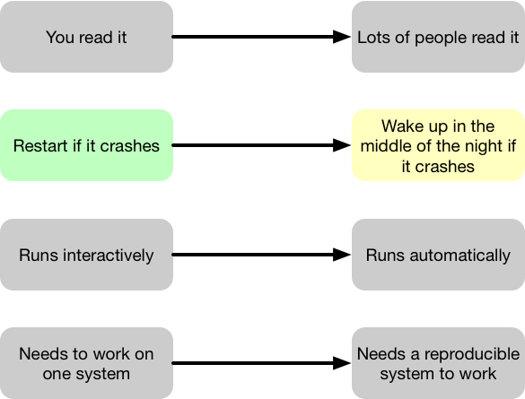
Exceptions
def predict(input_payload):
# Marshal the dict into a DF.
input_frame = pd.DataFrame.from_records([input_payload])
try:
prediction = model.predict(input_frame)
except KeyError:
# Return an error payload. The server will return a 404
# when it sees an error in the dict.
return {"error": "Input payload missing required field."}
return {"id": input_payload["id"], "prediction": prediction}You control your input data in training. You do not in production. Handle exceptions.
Unit Tests
def test_calculate_z():
input_payload = {
"a": 12,
"x": 1.23,
"y": "hat"
}
truth = 0.9
answer = calculate_feature_z(input_payload)
assert truth == answerUnit tests ensure the function returns the correct value.
Smoke Tests
def test_predict(test_data):
for payload in test_data:
answer = predict(payload)
# Answer should always be between zero and one.
assert answer >= 0.0
assert answer <= 1.0Smoke tests ensure the pipeline will run without crashing.
For machine learning models they do not check the answer strictly.
Smoke Tests
def test_predict(test_data):
predictions = []
for payload in test_data:
answer = predict(payload)
predictions.append(answer)
# Answer should always be between zero and one.
assert answer >= 0.0
assert answer <= 1.0
assert mean_squared_error(predictions, truth) < 0.2They can be used as regression tests when run with real data.
What We Have So Far
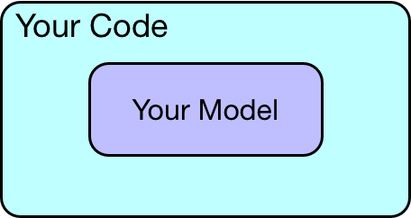
What We Actually Have
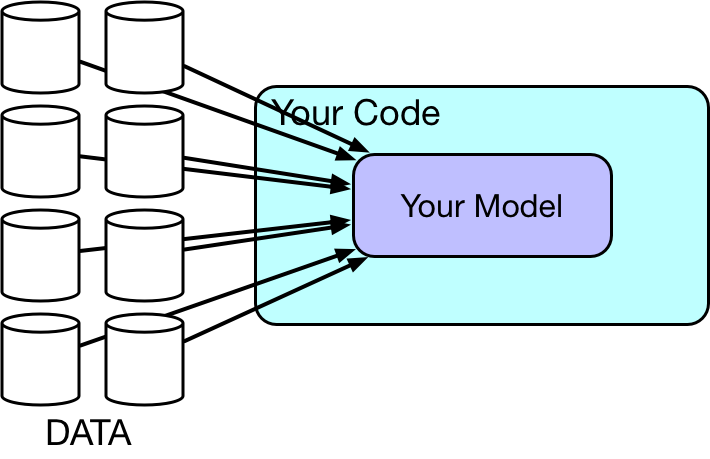
Data Tests
- Data tests validate that certain properties are present in the dataset.
- They’re designed to catch data problems prior to launching your model.
- They can also monitor data streams into and out of your model in production.
Data Tests
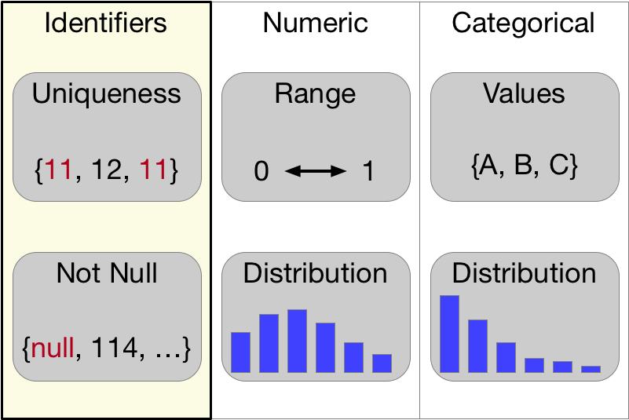
Duplicate or missing identifiers indicate an ETL problem.
Data Tests
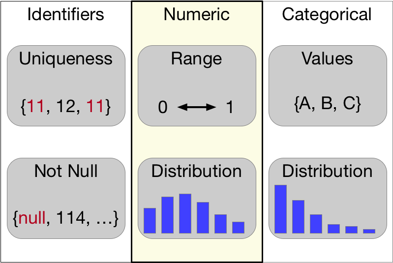
Numeric values outside the accepted range can be an ETL problem or corrupt data.
Data Tests
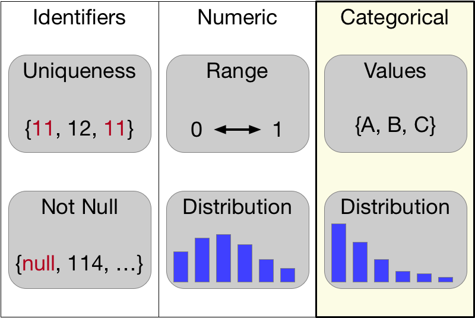
Unexpected categorical values indicate an upstream change your model will not be trained for.
Proving Your Code Is Correct
is impossible.
The most correct code is the most obviously correct code.
- Tells a story.
- Follows convention.
- Well tested.
Proving Your Data Is Correct
The data is never correct.

Notebook vs Production
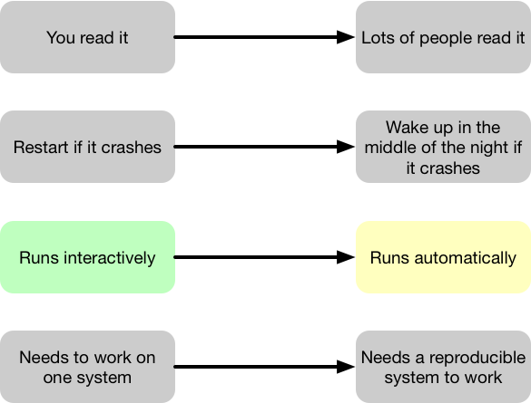
How Your Code Will Run
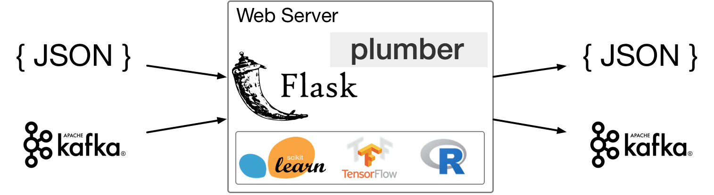
It’s straightforward to wrap a model in a web server like Flask or Shiny.
How Your Code Will Run
This could run on a request-by-request basis or receive values from a stream.
How Your Code Will Run
It’s usually a good idea to serve the model in the same language runtime it was trained in.
How Your Code Will Run
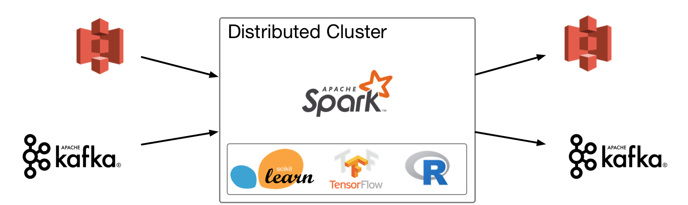
It’s also fairly straightforward to call a model from a Spark job.
How Your Code Will Run
These jobs usually read/write from S3 (batch) or Kafka (streaming).
How Your Code Will Run
The same ideas apply with respect to the runtime - keep it the same as training.
Monitoring
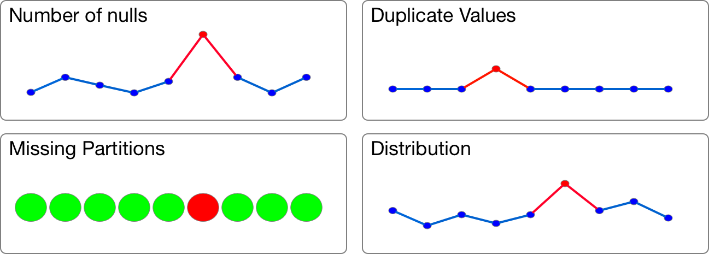
Nearly every problem with a machine learning model in production comes from the data.
Monitoring
Use the data quality tests on model inputs and outputs while the model runs in production.
Monitoring
For distributions, use chi squared or KL divergence against the distribution you trained on.
Notebook vs Production
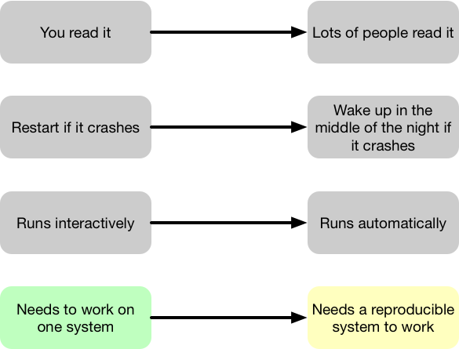
Make a Package
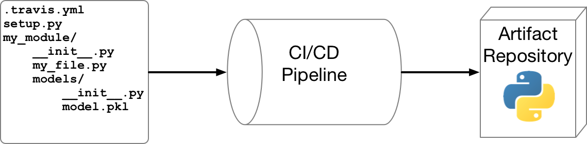
Packaging your model makes it installable with standard packaging tools.
Make a Package
A CI/CD pipeline ensures the package is tested and built automatically.
Make a Package
Artifact repositories host your package and make it accessible.
Docker
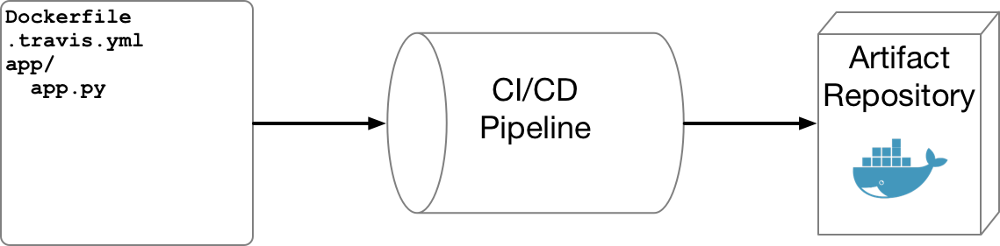
Usually the services wrapping the model get deployed with Docker.
Docker
The procedure is very similar - the CI/CD pipeline does the heavy lifting. The artifact repository hosts the image.
Comments
Clear code tells you what’s happening. Comments tell you why.